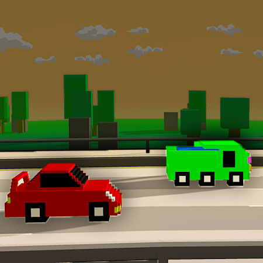
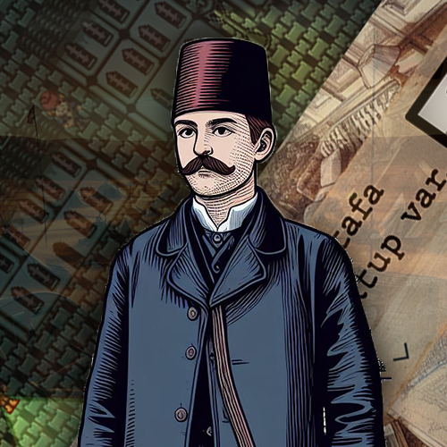
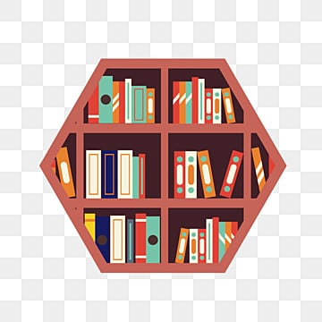
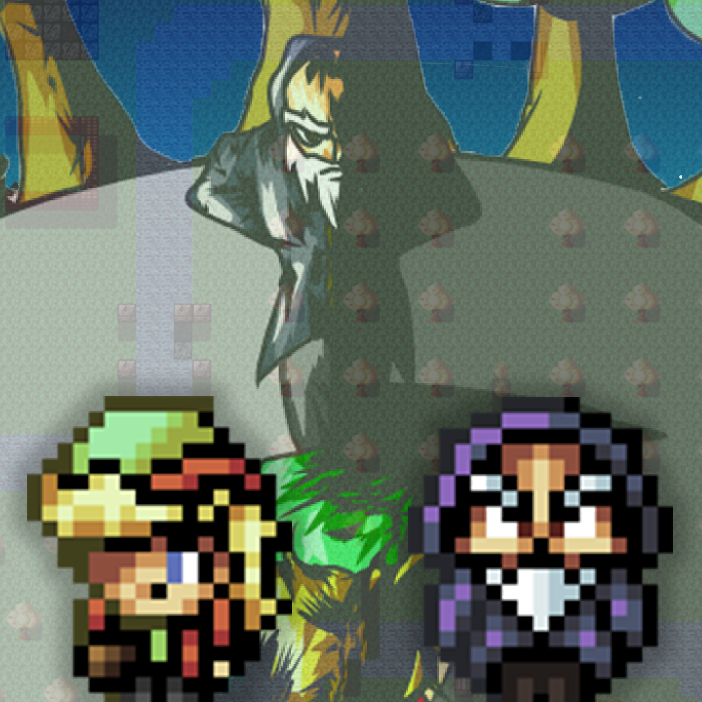
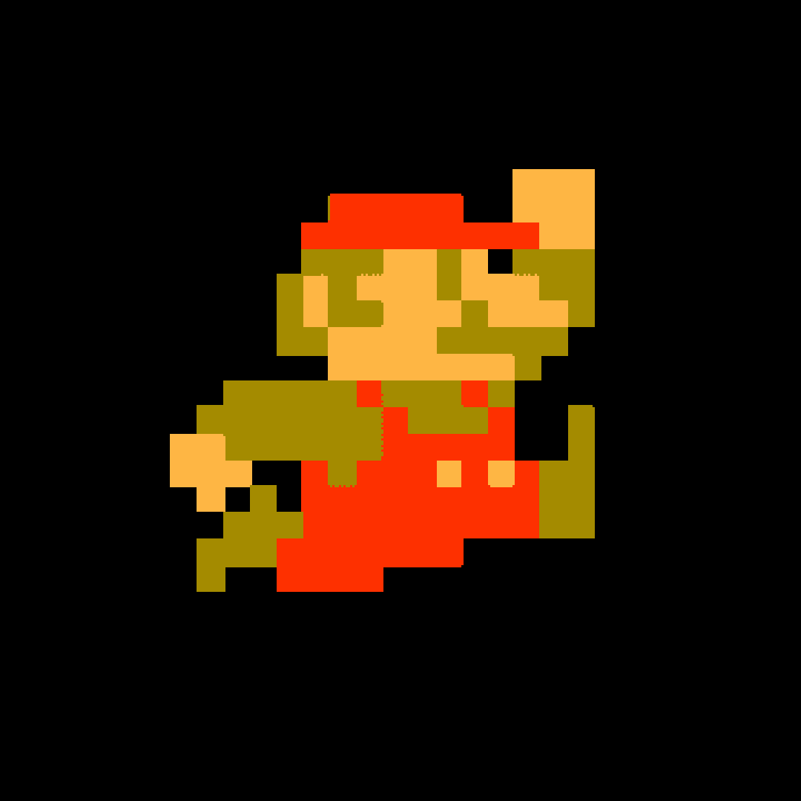

Yazılım Projeleri
Burada daha önce yaptığım veya hâlâ yapıyor olduğum projeler bulunuyor. Buraya arayüz tasarımını yapıp kodunu yazmadığım projeler dahil etmedim.
Tutsak: Işığı Ararken
Şubat 2025
TEDUJAM 2025 için yapılmış, ışık temalı mikro oyunlar oynayarak ana karakterin tutsaklıktan kurtarılmaya çalışıldığı bir oyun.
HISTanbul (Istanbul Trip Planner)
Aralık 2024
İETT ve Tech İstanbul'un düzenlediği İstanbul'un Toplu Ulaşımında Akılcı Çözümler Hackathonu için 4 kişilik bir grupla 1 gün içinde turistler için hazır rotalarla İstanbul'u İETT otobüsleriyle gezdirmeyi hedefleyen bir uygulamayı React Native ile geliştirdik.
Radiosphere (Internet Radio App)
Temmuz 2024
Mita'daki yaz stajım kapsamında React Native ile geliştirdiğim internet radyosu mobil uygulaması.

Rush Racer
Aralık 2023
TED Üniversitesi SENG 463 dersi projesi olarak yapılmış, Unity üzerinden 2 pist ve farklı araçlarla yapılmış araba yarışı oyunu.

Posta: Son Karar
Ekim 2023
%100 Game Jam için yapılmış, hem karar alınıp hem postacının kontrol edilebildiği, yarışma sonucunda ilk 10'a girmiş oyun.

MySQL Library Management System
Mayıs 2023
TED Üniversitesi CMPE 232 dersi projesi olarak yapılmış, MySQL ve Java Spring üzerinden yazılmış kütüphane yönetimi yazılımı.

Reaping Of The Sow
Ekim 2022
Greeny Game Jam 2022 için yapılmış, oyuncunun yaptıklarının sonuçlarını görebileceği 3 bölümlük bir oyun projesi.

Super Mario Bros. Prototype on Java
Mayıs 2022
TED Üniversitesi CMPE 114 dersi projesi olarak yapılmış, oyun içi arayüz, düşman, bölüm geçişlerinin denendiği bir oyun projesi.